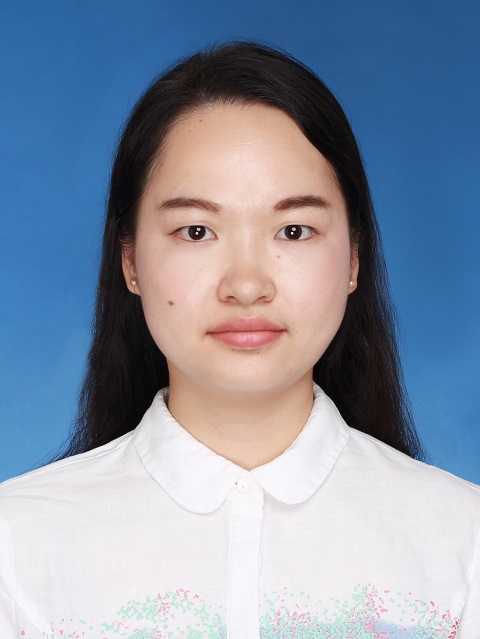

|
Li, Lanhua (李兰花)
|
 |
Postdoctoral Fellow,
School of Intelligent Systems Engineering,
Sun Yat-Sen University
Shenzhen City, China
E-mail: lilh65@mail.sysu.edu.cn
|
About me
Dr. Li is currently a Research Assistant Professor with the School of Intelligent Systems Engineering, Sun Yat-Sen University. She received her B.E. degree and M.E. degree from Hunan Normal University, Changsha, China, in 2013 and 2016, respectively, and the Ph.D. degree in computer applications technology from the University of Chinese Academy of Sciences, Shenzhen, China, in 2021. She was a Postdoctoral Fellow at Sun Yat-Sen University in 2021-2023 and also a Visiting Postdoctoral Fellow with Internet Mobile Computing Lab (IMCL) led by Prof. Jiannong Cao in the Department of Computing from The Hong Kong Polytechnic University (PolyU) in 2022.
Research
Her research interests include:
Passive sensing networks
Intelligent reflecting surface
Backscatter communications
UAV-enabled communication and sensing
Edge AI
Wireless resource optimization
Semantic communications
AIoT
Publications
Lanhua Li, Guolin Chen, Xiaoxia Huang, Jinbei Zhang, Jiannong Cao, "Meta-BackCom: Hybrid Reflect-Decode-Forward Online Relaying in Metasurface-Enhanced Backscatter Networks", IEEE Network, 2023 (Early Access).
Lanhua Li, Xiaoxia Huang*, and Yuguang Fang, "Hierarchical Multiple Access for Spectrum-Energy Opportunistic Ambient Backscatter Wireless Networks", IEEE Transactions on Mobile Computing,2022, doi: 10.1109/TMC.2022.3158618. [TMC]
Lanhua Li, Xiaoxia Huang*, "Promoting Energy Efficiency and Proportional Fairness in Densely Deployed Backscatter-Aided Networks", IEEE Internet of Things Journal, 2021, 8(13): 10518-10530. [IOTJ]
Lanhua Li, Xiaoxia Huang*, Xuming Fang, and Yuguang Fang, "Efficient Hierarchical Multiple Access for Ambient Backscatter Wireless Networks", IEEE GLOBECOM, Waikoloa, HI, USA, Dec. 2019.
Lanhua Li, Xiaoxia Huang*, and Shimin Gong, "Robust Cooperative Routing for Ambient Backscatter Wireless Sensor Networks", IEEE GLOBECOM, Singapore, Dec. 2017.
李兰花, 黄晓霞*, "MC-NOMA增强型反向散射网络中的谱能效率均衡优化", 系统工程与电子技术, 2022, 44(2): 651-661.
Note: * indicates the corresponding author.
Academic service
Reviewer
IEEE Transactions on Wireless Communications
IEEE Transactions on Mobile Computing
IEEE Transactions on Vehicular Technology
IEEE Transactions on Signal Processing
China Communications
Project Experience
NSFC, Research on Robust Relay Communication for Metasurface-Enhanced Backscatter Networks, 2023.01-2025.12, PI: Dr. Lanhua Li. Guangdong University Featured Innovation Program Project, Research on the theory and method of robust communication for zero-power stochastic uncertain networks, 2023.10-2025.10, PI: Dr. Lanhua Li. NSFC-Guangdong Joint Program, Research on Spectral Big Data Theory and Key Technologies for Mobile Cognitive Networks, 2016.01-2019.12, PI: Prof. Xiaoxia Huang. National Key Research and Development Program of China, AI Technology based Innovation and Entrepreneurship Service Technology Integration R&D and Application Demonstration, 2019.12-2022.11, PI: Dr. Yanyan Shen. NSFC, Research on High-Precision and High-Availability Positioning Technology for Urban Canyons, 2019.01-2021.12, PI: Dr. Kongyang Chen.
Awards
School Roll Student, University of Chinese Academy of Sciences (2017-18, 2018-19)
National Scholarship for Graduate Student (2015)
Excellent graduate student, Hunan Normal University (2015)
National Motivational Scholarship (2009-10, 2010-1)
|